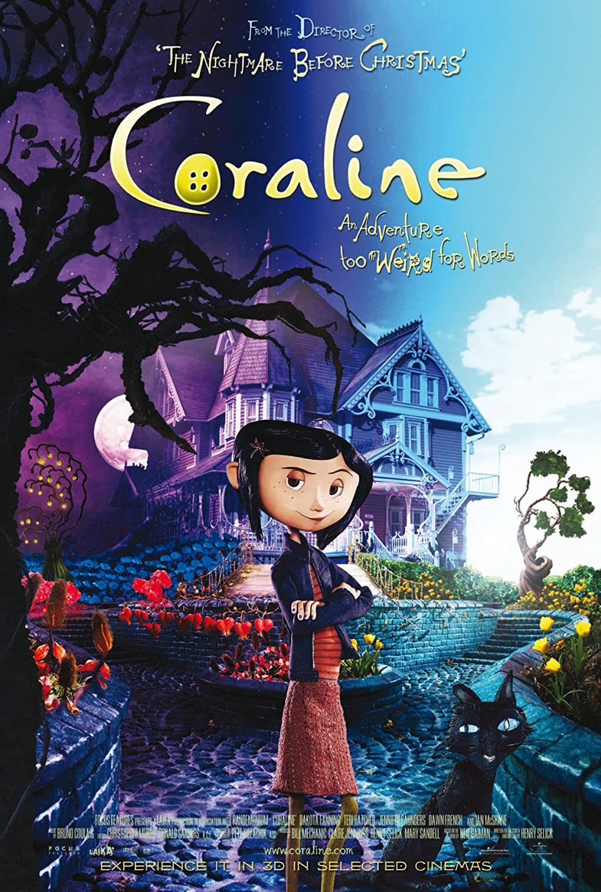

Información

|
Esta página está basada en Coraline, una película de fantasía oscura, animada con stop-motion y dirigida por Henry Selick. Está basada en la novela con el mismo nombre, escrita por Neil Gaiman.
La mayoría de las imágenes se tomaron del film original, las fuentes de las ilustraciones de la página principal se relacionan más adelante. La información se complementó con la página del film en fandom.com. |
 |
Autor:Luis Carlos Diaz FajardoEstudiante de Ingeniería Electrónica |
Fuentes:
|